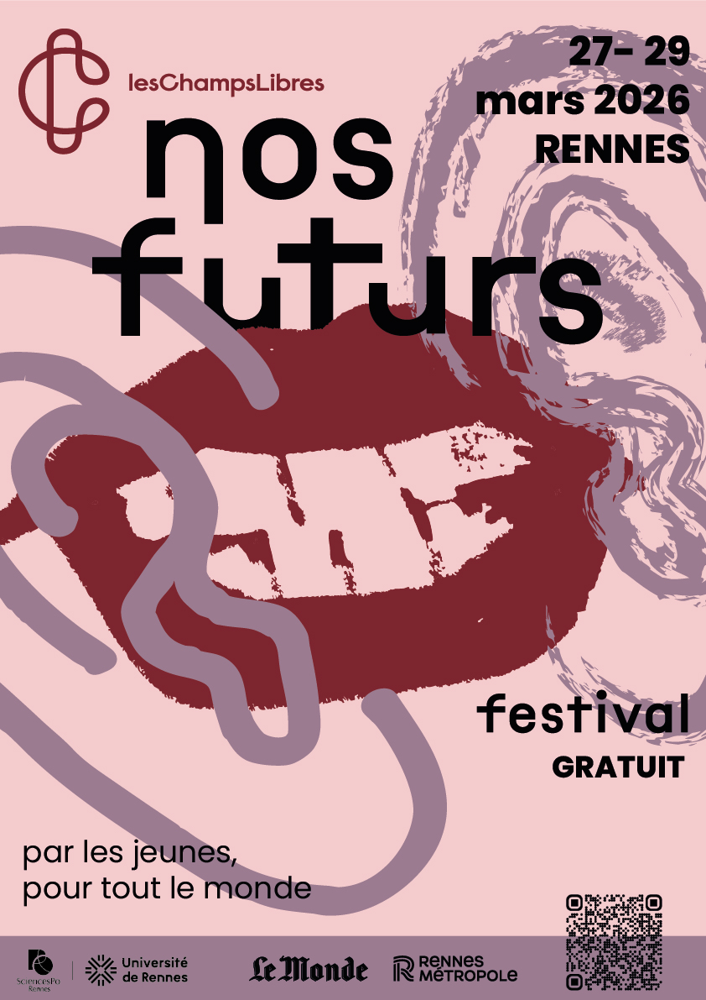
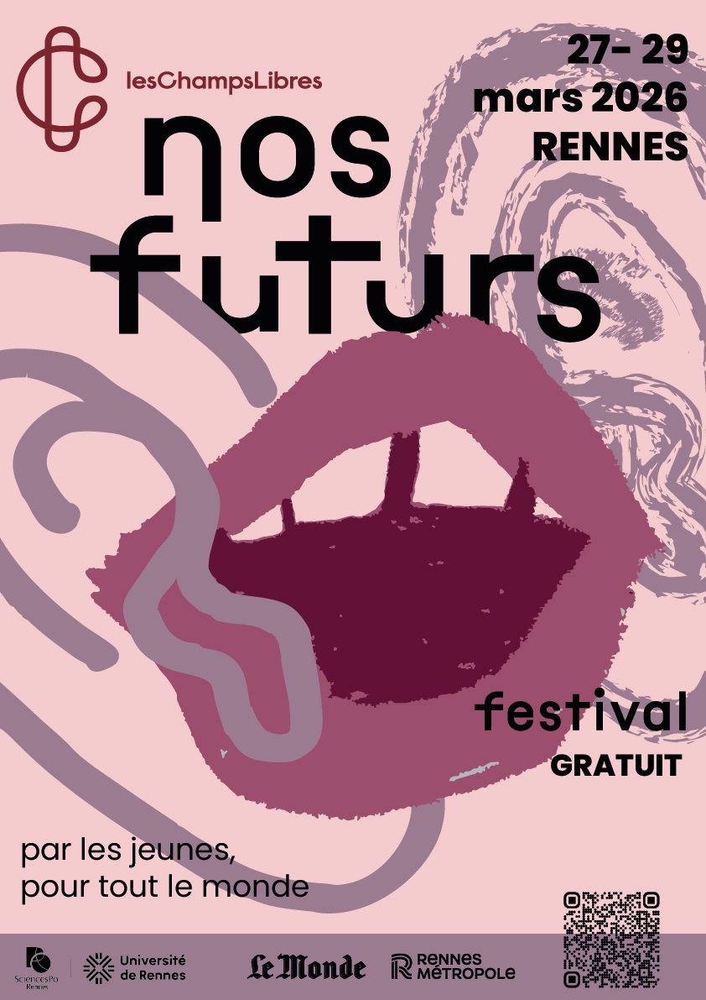
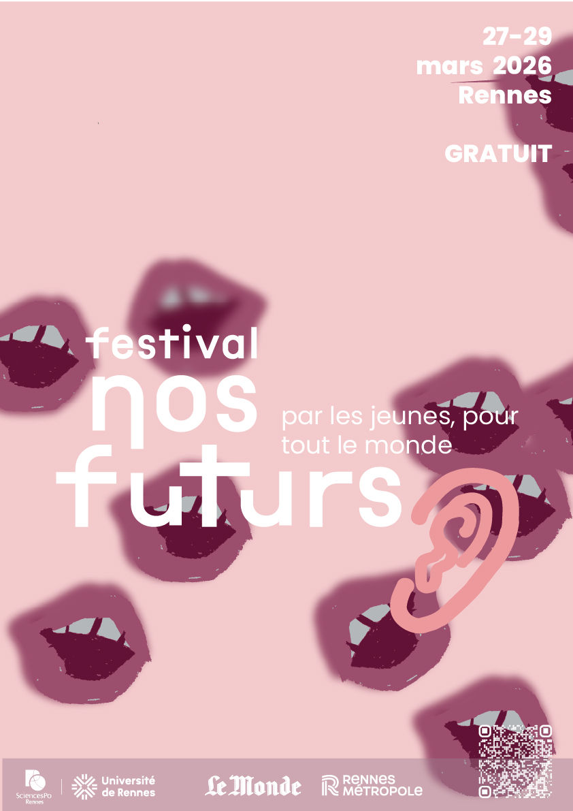
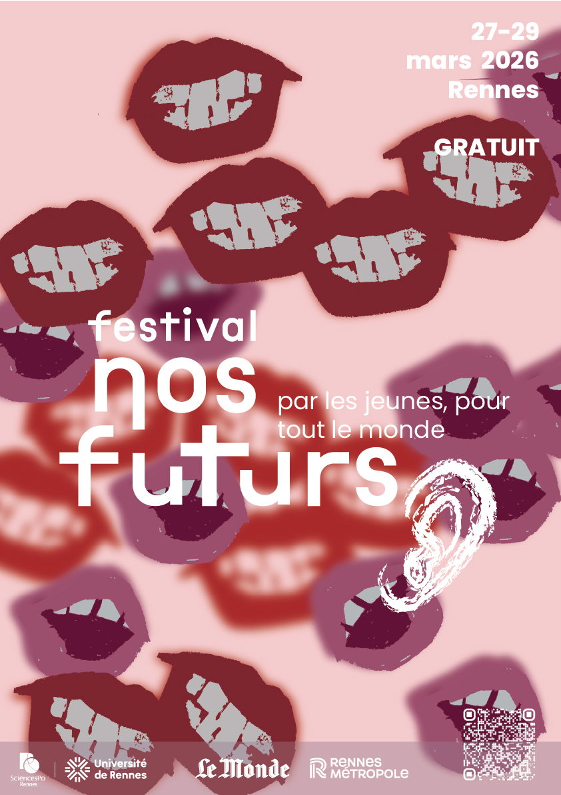
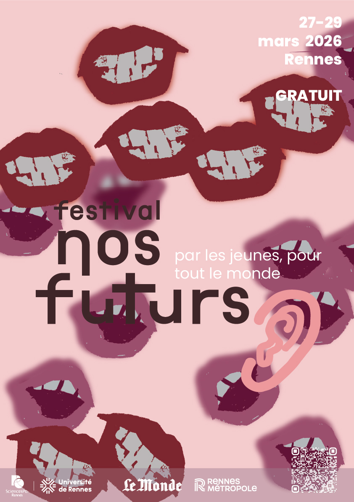

Nos Futurs
LE FESTIVAL
NOS
FUTURS
Le projet a été conçu pour le festival Nos Futurs, un événement centré sur le débat, la prise de parole et l’échange collectif, notamment porté par les jeunes.





Le choix de représenter une bouche et des oreilles fait directement référence à l’expression « bouche à oreille ». Ces éléments visuels symbolisent la circulation de la parole, l’écoute et le dialogue, au cœur du thème du festival. La répétition des formes et leur traitement graphique permettent de créer une composition dynamique qui attire l’attention.